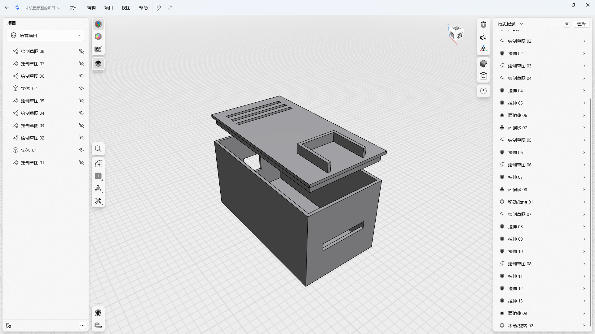
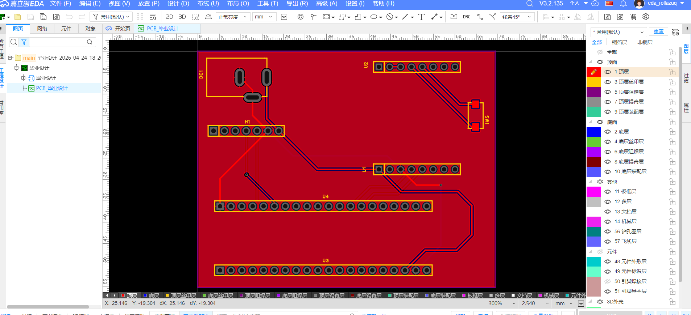
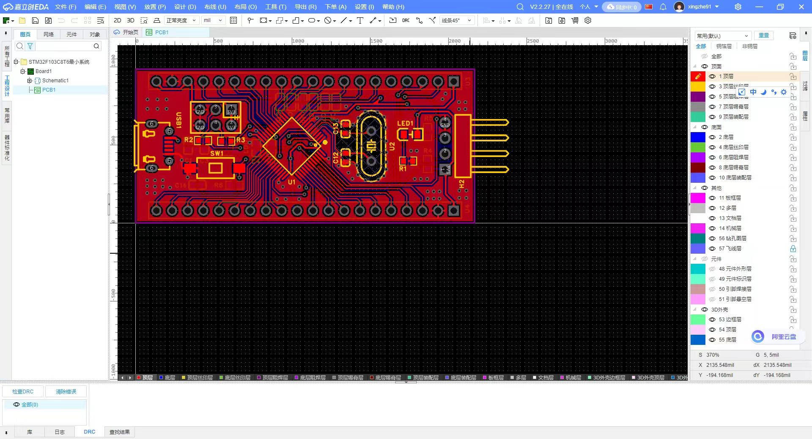
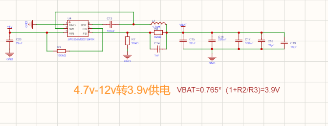
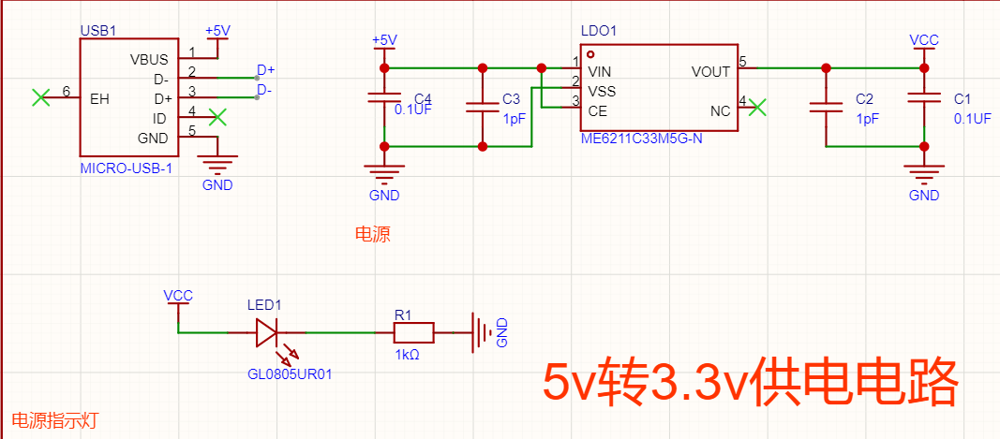
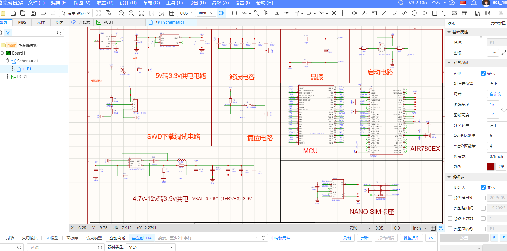
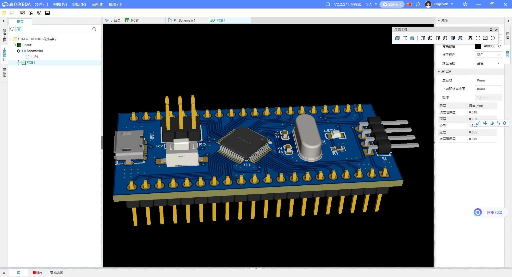
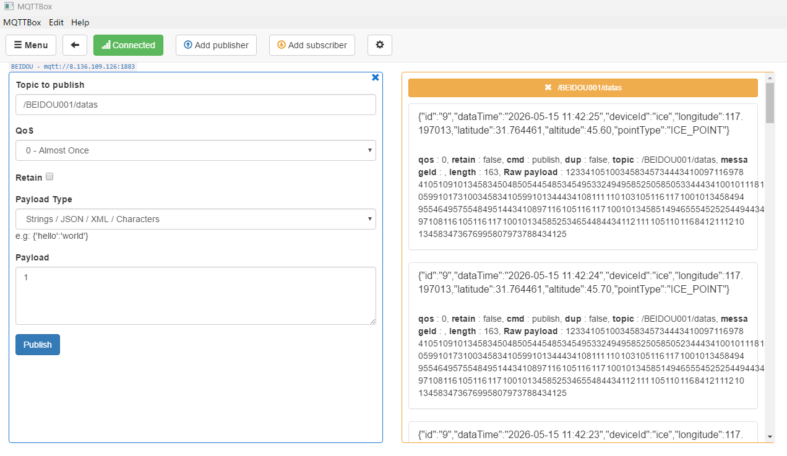
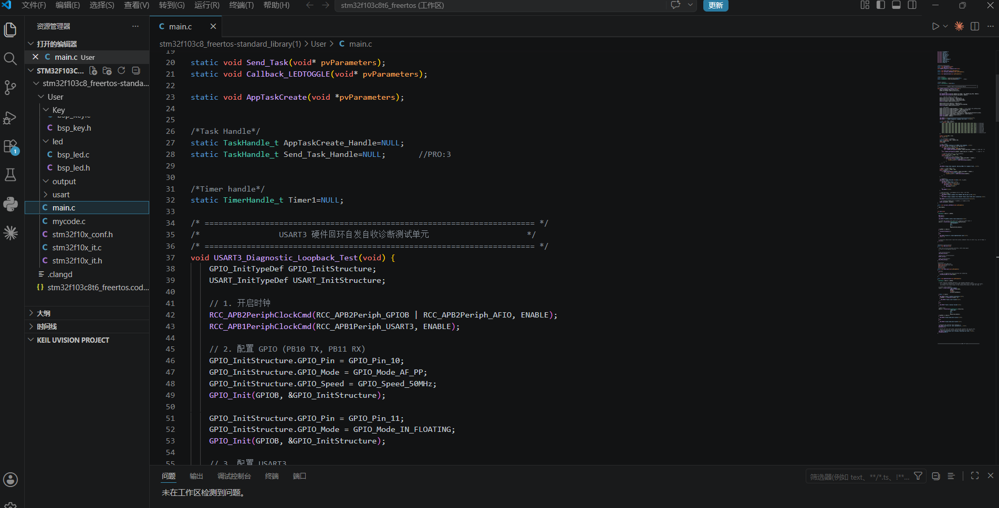

🎓 答辩技术栈讲解
本项目面向产品级导线覆冰监测需求，在STM32F103C8T6（Cortex-M3, 72MHz, 20KB RAM）上构建了基于FreeRTOS的实时嵌入式系统。
以下按技术栈逐一讲解核心设计。
0. 系统核心架构 — 硬件拓扑 + 软件分层
🔲 STM32F103C8T6
Cortex-M3 @ 72MHz
FreeRTOS V9.0.0
16KB堆 · 5任务
FreeRTOS V9.0.0
16KB堆 · 5任务
🛰 TAU1201
北斗/GPS 双模定位
USART3 · 115200bps
仅保留 GGA 输出
USART3 · 115200bps
仅保留 GGA 输出
📶 Air780e
4G Cat.1 通信模块
USART2 · AT指令
MQTT Client
USART2 · AT指令
MQTT Client
☁️ MQTT Broker
8.136.109.126:1883
mosquitto
/BEIDOU001/datas
mosquitto
/BEIDOU001/datas
🔌 调试串口
USART1 · PA9/PA10
异步日志输出
LOG_PRINT 宏
异步日志输出
LOG_PRINT 宏
TAU1201→MCU USART3 · RXNE中断 · gpsQueue(512B) · GPS_TASK prio4
MCU→Air780e USART2 · AT指令 · Air780e_StateMachine() · MQTT_APP prio3
Air780e→Cloud 4G LTE · MQTT · QoS1 · 指数退避重连 · 3条离线缓存
MCU→PC USART1 · 异步LOG_PRINT · Log_Task prio1
MCU→Air780e USART2 · AT指令 · Air780e_StateMachine() · MQTT_APP prio3
Air780e→Cloud 4G LTE · MQTT · QoS1 · 指数退避重连 · 3条离线缓存
MCU→PC USART1 · 异步LOG_PRINT · Log_Task prio1
1. 串口高吞吐处理方案 — 三管齐下对抗资源瓶颈
STM32F103C8T6仅20KB RAM，而TAU1201以115200bps持续输出NMEA数据时，每秒约1.5KB。
若不加控制，数秒内就会耗尽内存。以下三重优化确保系统稳定运行。
策略一：按需开关串口
非采样期直接关闭USART3，包括外设时钟和RXNE中断。
仅在接收到信号量后才使能串口，一条GGA采完立即关闭。
中断开销从"持续存在"降为"窗口触发"。
// mycode.c:139-160 GPS_Enable / GPS_Disable
static void GPS_Disable(void) {
USART_Cmd(GPS_USART, DISABLE);
USART_ITConfig(GPS_USART, USART_IT_RXNE, DISABLE);
}
static void GPS_Enable(void) {
// 先清空SR/DR和队列中的残留数据
volatile uint16_t sr = GPS_USART->SR;
volatile uint16_t dr = GPS_USART->DR;
(void)sr; (void)dr;
xQueueReset(gpsQueue); // 清旧数据
USART_ITConfig(GPS_USART, USART_IT_RXNE, ENABLE);
USART_Cmd(GPS_USART, ENABLE);
}
策略二：仅保留GGA语句
TAU1201默认输出10种NMEA语句（GGA/GLL/GSA/GSV/RMC/VTG/ZDA/GST/TXT等）。
上电后发送10条专有二进制配置指令关闭所有无关输出，数据量降低约90%。
// mycode.c:67-76 UBX协议二进制指令集
const uint8_t close_gll[] = {0xF1,0xD9,0x06,0x01,0x03,0x00,0xF0,0x01,0x00,0xFB,0x11};
const uint8_t close_gsa[] = {0xF1,0xD9,0x06,0x01,0x03,0x00,0xF0,0x02,0x00,0xFC,0x13};
const uint8_t close_rmc[] = {0xF1,0xD9,0x06,0x01,0x03,0x00,0xF0,0x05,0x00,0xFF,0x19};
// ... 共10条指令，逐条发送，每条约11字节
// TAU1201_Config() 连续发送，间隔50ms
策略三：ISR错误处理防死锁
高速串口易发生ORE溢出错误，若ISR只处理RXNE不处理ORE，MCU将陷入无限中断循环。
同时检查所有错误标志，错误字节丢弃但标志位被安全清除。
// mycode.c:199-224 USART3_IRQHandler
void USART3_IRQHandler(void) {
volatile uint16_t sr = GPS_USART->SR;
if(USART_GetITStatus(GPS_USART,USART_IT_RXNE)!=RESET||
(sr&(USART_FLAG_ORE|USART_FLAG_NE|
USART_FLAG_FE|USART_FLAG_PE))!=0){
uint8_t ch=USART_ReceiveData(GPS_USART);
if((sr&(USART_FLAG_ORE|USART_FLAG_NE|
USART_FLAG_FE|USART_FLAG_PE))==0){
xQueueSendFromISR(gpsQueue,&ch,&xHPTW);
}else{/* 丢弃错误字节，标志已清除 */}
portYIELD_FROM_ISR(xHPTW);
}
}
512×1B
gpsQueue 深度
~90%
数据量削减
115200
波特率 (bps)
2. 4G通信状态机与自愈重连 — 面向野外无人值守的产品级设计
Air780e驱动核心是一个包含13个状态的非阻塞状态机，每10ms轮询一次。
内置指数退避重连、致命错误检测、硬件复位、离线消息缓存四种自愈机制。
POWER_OFF
关机态
→
关机态
INIT_RESET
AT+IPR/RESET
→
AT+IPR/RESET
CHECK_CSQ
信号质量
→
信号质量
CHECK_CCID
SIM卡检测
→
SIM卡检测
CHECK_CGREG
网络注册
→
网络注册
CHECK_CGATT
GPRS附着
→
GPRS附着
MQTT_CONFIG
AT+MCONFIG
→
AT+MCONFIG
MIPSTART
TCP握手
→
TCP握手
MCONNECT
MQTT握手
→
MQTT握手
MSUB
订阅主题
→
订阅主题
CONNECTED
✅ 就绪
✅ 就绪
任一状态失败 →
WAIT_BACKOFF
: 指数退避 2s→4s→8s→16s→32s→60s(max) → 重试CHECK_CSQ
连续失败5次 → ERROR : 10秒后硬件复位 → 重新开始
连续失败5次 → ERROR : 10秒后硬件复位 → 重新开始
// Air780e.c:285-307 指数退避核心算法
static void HandleConnectionError(void)
{
s_ctx.error_count++;
LOG_PRINT("[Air780e] Error count: %d. Backoff...\r\n",
s_ctx.error_count);
if (s_ctx.is_connected) {
s_ctx.is_connected = false;
TriggerEvent(AIR780E_MQTT_EVENT_DISCONNECTED, NULL);
}
if (s_ctx.error_count > 5) {
// 连续5次失败 → 硬件复位
LOG_PRINT("Too many errors, HW reset.\r\n");
Air780e_HardwareReset();
} else {
// 指数退避: 2s→4s→8s→...→60s(max)
s_ctx.backoff_delay_ms *= 2;
if (s_ctx.backoff_delay_ms > 60000)
s_ctx.backoff_delay_ms = 60000;
s_ctx.error_tick = xTaskGetTickCount()*portTICK_PERIOD_MS;
s_ctx.state = AIR780E_STATE_WAIT_BACKOFF;
}
}
🛡 四重自愈机制：
① 指数退避：避免频繁重连耗尽4G模块资源
② 致命错误检测：双重监控RDY/CLOSED/DISCONNECT/+CME ERROR:767
③ 硬件复位：连续5次失败触发RST引脚复位
④ 离线缓存：3条环形缓存，重连后MqttCache_Flush自动补发
① 指数退避：避免频繁重连耗尽4G模块资源
② 致命错误检测：双重监控RDY/CLOSED/DISCONNECT/+CME ERROR:767
③ 硬件复位：连续5次失败触发RST引脚复位
④ 离线缓存：3条环形缓存，重连后MqttCache_Flush自动补发
⚡ 致命错误四剑客 (Air780e.c:263-273)：
RDY — 模块异常重启就绪CLOSED — TCP连接被服务端关闭DISCONNECT — MQTT层断连+CME ERROR: 767 — MQTT无连接状态
// Air780e.c:530-533 连接状态查询
bool Air780e_IsConnected(void) {
return s_ctx.is_connected;
}
// GPS任务阻塞等待该标志为true后才开始采集
3. FreeRTOS实时调度 — 任务优先级设计与采集-发送流水线时序
任务优先级阶梯 (5级抢占)
🛰 GPS_TASK
Prio 4
栈256B
⏱ Timer Service
Prio 4
栈256B
📶 MQTT_APP
Prio 3
栈384B
📝 Log_Task
Prio 1
栈128B
设计原则：
· GPS_TASK最高优先级(4)：串口数据实时性要求最高
· MQTT_APP次高优先级(3)：大量阻塞等待，可被GPS抢占
· Log_Task最低优先级(1)：丢日志不影响系统功能
· 总堆大小：16KB (heap_4)，所有任务和队列从中分配
· GPS_TASK最高优先级(4)：串口数据实时性要求最高
· MQTT_APP次高优先级(3)：大量阻塞等待，可被GPS抢占
· Log_Task最低优先级(1)：丢日志不影响系统功能
· 总堆大小：16KB (heap_4)，所有任务和队列从中分配
信号量流水线同步机制
1
GPS_TASK
xSemaphoreTake(gpsCaptureSync, ∞) → GPS_Enable() → 采集一条GGA → 解析→JSON → xQueueSend(mqttPublishQueue) → GPS_Disable()
2
MQTT_APP
xQueueReceive(mqttPublishQueue) → AT+MPUB 发送 → 最多重试3次 → xSemaphoreGive(gpsCaptureSync)
3
GPS_TASK
信号量被释放 → 立即开始下一轮采集 (循环)
设计优势：实现"一收一发"节奏控制，避免GPS串口长时间开放。
初始启动：GPS_TASK在4G连接成功后主动xSemaphoreGive启动流水线。
离线保护：4G断网时消息自动进入3条环形缓存，重连后Flush补发。
初始启动：GPS_TASK在4G连接成功后主动xSemaphoreGive启动流水线。
离线保护：4G断网时消息自动进入3条环形缓存，重连后Flush补发。
任务时序图 — GPS采集→MQTT发送→信号量同步 完整周期
时间轴展示一个完整采集-发送周期。GPS_TASK在信号量上阻塞，MQTT_APP发送成功后释放信号量。
时间轴
0s
1s
2s
3s
4s
5s
🛰 GPS_TASK
Prio 4
Prio 4
等待4G连接
配置
等信号量
采集
解析
等信号量
采集
解析
等信号量...
📶 MQTT_APP
Prio 3
Prio 3
4G状态机连接中...
轮询
发送+释放
轮询
轮询
轮询
发送+释放
轮询
📝 Log_Task
Prio 1
Prio 1
📤
📤
📤
📤
📤
📤
📤
🔒 信号量
gpsCaptureSync
gpsCaptureSync
▲ Take
▼ Give
▲ Take
▼ Give
🔌 USART3
状态
状态
关闭 (无中断)
开启
关闭
开启
关闭
■ 执行中
□ 阻塞等待
▲ Take信号量
▼ Give信号量
4. 异步日志系统 — 不阻塞业务任务的调试输出
核心思路：传统
printf 在115200波特率下发送一行日志可能阻塞数毫秒，对实时系统是致命的。
本系统将日志格式化与物理发送完全解耦。
// bsp_usart.h:43-56 日志系统配置
#define LOG_QUEUE_LENGTH 10 // 队列深度10条
#define LOG_MSG_MAX_LEN 128 // 每条最大128字节
extern bool g_log_output_enabled; // 运行时全局开关
// 核心宏：异步打印，仅格式化+入队，立即返回
#define LOG_PRINT(fmt, ...) Log_Printf(fmt, ##__VA_ARGS__)
// bsp_usart.c:44-69 Log_Printf实现
void Log_Printf(const char *format, ...) {
if (!g_log_output_enabled) return; // 全局开关
char buffer[LOG_MSG_MAX_LEN];
va_list args;
va_start(args, format);
vsnprintf(buffer, LOG_MSG_MAX_LEN, format, args);
va_end(args);
if (xTaskGetSchedulerState() != taskSCHEDULER_NOT_STARTED) {
xQueueSendToBack(xLogQueue, buffer, 0); // 非阻塞入队
} else {
Usart_SendString(DEBUG_USARTx, buffer); // 调度器未启动时直接发
}
}
// bsp_usart.c:26-33 Log_Task 实现
static void Log_Task(void *pvParameters) {
char msg[LOG_MSG_MAX_LEN];
while (1) {
// 阻塞等待队列有数据
if (xQueueReceive(xLogQueue, msg, portMAX_DELAY) == pdTRUE) {
Usart_SendString(DEBUG_USARTx, msg); // 物理发送
}
}
}
// bsp_usart.c:36-41 Log_Init 初始化
void Log_Init(void) {
xLogQueue = xQueueCreate(LOG_QUEUE_LENGTH, LOG_MSG_MAX_LEN);
if (xLogQueue != NULL) {
xTaskCreate(Log_Task, "Log_Task", 128, NULL, 1, &xLogTaskHandle);
}
}
设计要点：
① LOG_PRINT仅做vsnprintf+入队，不等待发送完成
② 调度器未启动时直接阻塞发送，确保初始化日志不丢失
③ g_log_output_enabled运行时开关，部署后可关闭日志省CPU
④ USART1仅做TX，无RX中断，不占用额外中断资源
① LOG_PRINT仅做vsnprintf+入队，不等待发送完成
② 调度器未启动时直接阻塞发送，确保初始化日志不丢失
③ g_log_output_enabled运行时开关，部署后可关闭日志省CPU
④ USART1仅做TX，无RX中断，不占用额外中断资源
5. 定位数据处理管线 — 从NMEA原始数据到云端JSON
NMEA → 十进制度 坐标转换
// mycode.c:295-311 format_degree_minute()
// NMEA格式: ddmm.mmmm (度-分混合)
// 转换公式: 十进制度 = dd + mm.mmmm/60
// 示例: 3110.4697 → 31 + 10.4697/60 = 31.174495
static void format_degree_minute(const char* raw, char* out, int is_lon) {
if (raw[0] == '\0') {
strcpy(out, "0.000000"); // 空值保护
return;
}
double raw_val = atof(raw);
int degrees = (int)(raw_val / 100.0); // 提取度
double minutes = raw_val - (degrees * 100.0); // 提取分
double decimal_degrees = degrees + (minutes / 60.0);
sprintf(out, "%.6f", decimal_degrees); // 6位小数
}
| 纬度 3110.4697,N | → | 31.174495 |
| 经度 12123.3689,E | → | 121.389482 |
UTC→北京时间 与 JSON组装
// mycode.c:258-283 format_time()
// NMEA UTC: hhmmss.sss → 北京时间: UTC+8
static void format_time(const char* raw, char* out) {
if (raw[0] == '\0') {
strcpy(out, "2026-05-10 00:00:00"); return;
}
char temp[7] = "000000"; int len = 0;
for (int i=0; raw[i]!='\0' && len<6; i++)
if (raw[i]>='0' && raw[i]<='9') temp[len++]=raw[i];
int hour = (atoi(temp)/10000 + 8) % 24; // +8跨天取模
sprintf(out, "2026-05-10 %02d:%c%c:%c%c", hour,
temp[2],temp[3],temp[4],temp[5]);
}
// mycode.c:407-412 JSON组装 (Air780e用\22转义双引号)
// 输出: {\22id\22:\229\22,\22longitude\22:121.389482,...}
JSON转义细节 (Air780e适配)：AT+MPUB指令中双引号会与AT语法冲突。
查阅合宙Air780e文档后，使用
\22 作为双引号的转义序列。
模块内部会将 \22 还原为标准 " 后发送到MQTT Broker。
6. 产品化设计要点 — 区别于实验室原型的关键决策
🛡 三重错误恢复
① 指数退避：2s→4s→8s→...→60s
② 硬件复位：连续5次失败触发RST
③ ERROR兜底：10秒超时强制复位
确保无人值守环境自主恢复
② 硬件复位：连续5次失败触发RST
③ ERROR兜底：10秒超时强制复位
确保无人值守环境自主恢复
📦 离线数据不丢失
① 3条环形消息缓存(head/tail)
② 断网自动缓存→重连自动Flush
③ 缓存满时丢弃最旧消息
保证断网期间关键数据可追溯
② 断网自动缓存→重连自动Flush
③ 缓存满时丢弃最旧消息
保证断网期间关键数据可追溯
🔧 自诊断能力
① USART3硬件回环自检(main.c:37)
② AT指令超时与错误码全量日志
③ LED心跳：1秒翻转指示系统存活
④ 4G信号质量(CSQ)持续监测
部署前验证+运行时监控
② AT指令超时与错误码全量日志
③ LED心跳：1秒翻转指示系统存活
④ 4G信号质量(CSQ)持续监测
部署前验证+运行时监控
⚡ 资源精细化管理
① 堆大小精确计算：16KB/20KB
② 队列深度按需分配(512/10/10)
③ 任务栈独立配置(128~512B)
④ USART3按需开关省中断开销
20KB RAM实现完整功能
② 队列深度按需分配(512/10/10)
③ 任务栈独立配置(128~512B)
④ USART3按需开关省中断开销
20KB RAM实现完整功能
📡 4G通信鲁棒性
① 非阻塞状态机(每10ms轮询)
② AT指令超时独立配置(1s~5s)
③ URC异步消息实时捕获
④ MIPSTART双应答("CONNECT OK"/"ALREADY CONNECT")
适应野外弱网环境
② AT指令超时独立配置(1s~5s)
③ URC异步消息实时捕获
④ MIPSTART双应答("CONNECT OK"/"ALREADY CONNECT")
适应野外弱网环境
🔬 调试友好性
① 异步日志不阻塞业务
② LOG_ENABLE_4G_DEBUG编译开关
③ g_log_output_enabled运行时开关
④ USART1独立调试通道
开发→部署平滑过渡
② LOG_ENABLE_4G_DEBUG编译开关
③ g_log_output_enabled运行时开关
④ USART1独立调试通道
开发→部署平滑过渡
系统总览 — 硬件架构与代码映射
左右拖动/缩放查看完整架构。悬停模块查看详情。点击模块跳转到对应代码。
STM32F103C8T6
ARM Cortex-M3 @ 72MHz
TAU1201
北斗/GPS 双模定位
Air780e
4G Cat.1 MQTT通信
系统架构图
🛰 TAU1201
北斗/GPS 定位模块
USART3 · 115200bps
仅输出 GGA 语句
USART3 · 115200bps
仅输出 GGA 语句
🔲 STM32F103C8T6
ARM Cortex-M3 @ 72MHz
FreeRTOS V9.0.0
16KB 堆 | 5任务
FreeRTOS V9.0.0
16KB 堆 | 5任务
📶 Air780e
4G Cat.1 通信模块
USART2 · AT指令集
MQTT Client
USART2 · AT指令集
MQTT Client
☁️ MQTT Broker
8.136.109.126:1883
mosquitto 服务器
/BEIDOU001/datas
mosquitto 服务器
/BEIDOU001/datas
🔌 调试串口
USART1 · PA9/PA10
LOG_PRINT 异步日志
LOG_PRINT 异步日志
外壳结构设计 — Sharp3D 建模
面向野外部署的三防外壳设计（IP65防护等级考虑）

硬件原理图 — 引脚连接与信号映射
展示 STM32F103C8T6 与各外设模块的详细引脚连接、电气特性和中断优先级分配。
STM32F103C8T6 引脚分配
| 引脚 | 端口 | 功能 | 连接目标 | 配置 |
|---|---|---|---|---|
| PA9 | USART1_TX | 调试日志发送 | 串口转USB (CH340) | AF_PP, 50MHz |
| PA10 | USART1_RX | 调试日志接收 | 串口转USB (CH340) | IN_FLOATING |
| PA2 | USART2_TX | Air780e AT指令发送 | Air780e RXD | AF_PP, 50MHz |
| PA3 | USART2_RX | Air780e AT响应接收 | Air780e TXD | IN_FLOATING |
| PB10 | USART3_TX | GPS配置指令发送 | TAU1201 RXD | AF_PP, 50MHz |
| PB11 | USART3_RX | GPS NMEA数据接收 | TAU1201 TXD | IN_FLOATING |
| PB0 | GPIO | Air780e 电源控制 | Air780e PWR_KEY | Out_PP |
| PB1 | GPIO | Air780e 硬件复位 | Air780e RESET | Out_PP |
中断优先级配置
| 中断源 | 抢占优先级 | 子优先级 | 用途 | 说明 |
|---|---|---|---|---|
| SysTick | 15 (最低) | 0 | FreeRTOS 时基 | 1ms tick |
| USART2 | 6 | 0 | Air780e 数据接收 | RXNE+IDLE中断 |
| USART3 | 5 | 0 | GPS 数据接收 | RXNE中断, 高优先级防丢包 |
| PendSV | 15 | 0 | FreeRTOS 任务切换 | 最低优先级 |
| SVC | 15 | 0 | FreeRTOS 启动 | 系统调用 |
设计原则：
· USART3(GPS) 优先级 5 > USART2(4G) 优先级 6，确保 115200bps GPS 数据不丢包
· 所有中断优先级 > configMAX_SYSCALL_INTERRUPT_PRIORITY(11)，允许在ISR中使用FreeRTOS API
· 中断分组：4位抢占优先级，0位子优先级
· USART3(GPS) 优先级 5 > USART2(4G) 优先级 6，确保 115200bps GPS 数据不丢包
· 所有中断优先级 > configMAX_SYSCALL_INTERRUPT_PRIORITY(11)，允许在ISR中使用FreeRTOS API
· 中断分组：4位抢占优先级，0位子优先级
硬件连接拓扑图
PCB 设计与硬件实物
PCB 底板设计图

最小系统板 PCB

电源电路设计
DC-DC 4.7-12V 转 3.9V 电路

DC-DC 5V 转 3.3V 电路

原理图与3D模型
部分原理图

最小系统板 3D 视图

FreeRTOS 任务调度可视化
展示5个任务的优先级关系、栈空间分配、CPU时间片和任务间同步机制。
任务列表（优先级从高到低）
🛰 GPS_TASK
优先级 4
栈: 256B
⏱ Timer1 Service
优先级 4
栈: 256B
📶 MQTT_APP
优先级 3
栈: 384B
📤 SEND_TASK
优先级 3
栈: 512B
📝 Log_Task
优先级 1
栈: 128B
任务间同步机制
1
GPS ISR
USART3 接收中断 → 通过 xQueueSendFromISR 将字节送入 gpsQueue
2
GPS_TASK
阻塞等待 xSemaphoreTake(gpsCaptureSync) → 使能USART3 → 采集 GGA → 解析格式化 → 送入 mqttPublishQueue → 关闭USART3
3
MQTT_APP
轮询 xQueueReceive(mqttPublishQueue) → AT+MPUB 发送 → 重试3次 → 释放 xSemaphoreGive(gpsCaptureSync)
4
Log_Task
阻塞等待 xLogQueue → 通过USART1输出调试信息
5
Timer1
每 1000ms 触发 Callback_LEDTOGGLE → 翻转 LED1 (心跳指示)
5
用户任务数
3
消息队列 (Queue)
1
二值信号量
数据流管线 — GPS采集到云端发布全链路
展示从 GPS 卫星信号接收 → NMEA 解析 → 格式化重构 → MQTT 发布 → 云端的完整数据流。
🛰 GPS卫星
L1频段
📡 TAU1201
输出 $GNGGA
🔌 USART3 RX
RXNE中断
📦 gpsQueue
512B FIFO
⚙ GPS_TASK
GGA解析+坐标转换
📦 mqttPublishQueue
10×256B
📶 MQTT_APP
AT+MPUB发送
📡 Air780e
4G LTE
☁️ MQTT Broker
8.136.109.126:1883
GPS 原始数据示例（NMEA GGA）
$GNGGA,061234.000,3110.4697,N,12123.3689,E,1,08,1.0,50.5,M,,M,,*4B
| $GNGGA | 061234 | 3110.4697,N | 12123.3689,E | 1 | 08 | 1.0 | 50.5,M |
| 协议头 | UTC时间 | 纬度 | 经度 | 质量 | 卫星数 | HDOP | 海拔 |
格式化后 JSON 数据（上传格式）
{"id":"9","deviceId":"ice","longitude":121.389482,"latitude":31.174495,"altitude":50.50,"pointType":"ICE_POINT"}
| id:9 | deviceId:ice | longitude | latitude | altitude | pointType |
| 消息ID | 设备标识 | 经度(°) | 纬度(°) | 海拔(m) | 覆冰点类型 |
MQTTBox 数据接收验证
MQTTBox 客户端订阅 /BEIDOU001/datas 实时接收定位数据

Air780e 4G模块 — 非阻塞状态机
13个状态的完整流转。悬停查看状态详情。
MQTT 连接状态机 (13个状态)
POWER_OFF
关机
→
关机
INIT_RESET
AT+IPR / RESET
→
AT+IPR / RESET
CHECK_CSQ
AT+CSQ
→
AT+CSQ
CHECK_CCID
AT+CCID
→
AT+CCID
CHECK_CGREG
AT+CGREG?
→
AT+CGREG?
CHECK_CGATT
AT+CGATT?
→
AT+CGATT?
MQTT_CONFIG
AT+MCONFIG
→
AT+MCONFIG
MIPSTART
AT+MIPSTART
→
AT+MIPSTART
MCONNECT
AT+MCONNECT
→
AT+MCONNECT
MSUB
AT+MSUB
→
AT+MSUB
CONNECTED
就绪
就绪
ERROR
严重错误
⇄
严重错误
WAIT_BACKOFF
指数退避
指数退避
任一状态失败 → 错误计数+1 → WAIT_BACKOFF (指数退避 2s→4s→8s...→60s) → 重试 CHECK_CSQ
连续失败5次 → ERROR → 10秒后硬件复位
连续失败5次 → ERROR → 10秒后硬件复位
指数退避算法
// Air780e.c:285-307
static void HandleConnectionError(void)
{
s_ctx.error_count++;
if (s_ctx.error_count > 5) {
Air780e_HardwareReset();
} else {
s_ctx.backoff_delay_ms *= 2;
if (s_ctx.backoff_delay_ms > 60000)
s_ctx.backoff_delay_ms = 60000;
s_ctx.state = AIR780E_STATE_WAIT_BACKOFF;
}
}
致命错误检测
| URC/错误码 | 含义 |
|---|---|
| RDY | 模块重启就绪 |
| CLOSED | TCP连接关闭 |
| DISCONNECT | MQTT断开 |
| +CME ERROR: 767 | MQTT无连接 |
离线缓存机制
head→
已占用
已占用
空闲
空闲
←tail
循环队列 · 最多缓存3条 · 连接后自动Flush
关键算法深度解析
1. NMEA CSV字段提取
// mycode.c:234-249 get_csv_field()
static void get_csv_field(const char* csv, int field_idx,
char* out_buf, int max_len) {
int cur_idx = 0, out_idx = 0;
out_buf[0] = '\0';
for (int i = 0; csv[i] != '\0'; i++) {
if (csv[i] == ',') {
cur_idx++;
if (cur_idx > field_idx) break;
} else if (cur_idx == field_idx) {
if (out_idx < max_len - 1) {
out_buf[out_idx++] = csv[i];
out_buf[out_idx] = '\0';
}
}
}
}
// 提取GGA字段: [1]=时间 [2]=纬度 [4]=经度 [9]=海拔
2. 坐标度分→十进制度转换
// mycode.c:295-311 format_degree_minute()
// NMEA: ddmm.mmmm → Decimal: dd + mm.mmmm/60
static void format_degree_minute(const char* raw,
char* out, int is_lon) {
if (raw[0] == '\0') {
strcpy(out, "0.000000"); return;
}
double raw_val = atof(raw);
int degrees = (int)(raw_val / 100.0);
double minutes = raw_val - (degrees * 100.0);
double decimal_degrees = degrees + (minutes / 60.0);
sprintf(out, "%.6f", decimal_degrees);
}
// 示例: 3110.4697 → 31 + 10.4697/60 = 31.174495
3. TAU1201 配置协议 — UBX二进制指令
// mycode.c:67-76 UBX协议帧格式
// 前导码(2B)|Class(1B)|ID(1B)|长度(2B)|载荷(NB)|校验A(1B)|校验B(1B)
const uint8_t close_rmc[] = {
0xF1, 0xD9, // Preamble (同步头)
0x06, 0x01, // Class=06, ID=01 (CFG-MSG)
0x03, 0x00, // Payload Length = 3 (Little-Endian)
0xF0, 0x05, 0x00, // Payload: 0xF0=关闭, 0x05=RMC消息类型
0xFF, 0x19 // CK_A, CK_B (校验和)
};
// TAU1201_Config() 连续发送10条，间隔50ms
// 关闭: GLL GSA GRS GSV RMC VTG ZDA GST TXT TXT_ANT
4. USART3 中断安全处理
// mycode.c:199-224 ORE防无限中断
void USART3_IRQHandler(void) {
volatile uint16_t sr = GPS_USART->SR;
if(USART_GetITStatus(GPS_USART,USART_IT_RXNE)!=RESET||
(sr&(USART_FLAG_ORE|USART_FLAG_NE|
USART_FLAG_FE|USART_FLAG_PE))!=0){
uint8_t ch = USART_ReceiveData(GPS_USART);
// ↑ 读DR一次清除RXNE/ORE/NE/FE/PE所有标志
if((sr&(USART_FLAG_ORE|USART_FLAG_NE|
USART_FLAG_FE|USART_FLAG_PE))==0){
xQueueSendFromISR(gpsQueue,&ch,&xHPTW);
}else{
// 错误字节丢弃，标志已安全清除
// 避免MCU陷入无限中断循环
}
portYIELD_FROM_ISR(xHPTW);
}
}
5. Air780e USART2 IDLE中断接收
// Air780e.c:581-612 USART2_IRQHandler
void USART2_IRQHandler(void) {
volatile uint16_t sr = AIR780E_UART->SR;
// RXNE + 错误检测 (同USART3策略)
if(USART_GetITStatus(AIR780E_UART,USART_IT_RXNE)!=RESET||
(sr&(...))!=0){
uint8_t ch = USART_ReceiveData(AIR780E_UART);
if(无错误){g_Air780eRxBuffer[g_Air780eRxLen++]=ch;}
}
// IDLE中断: 一帧AT应答接收完毕
if(USART_GetITStatus(AIR780E_UART,USART_IT_IDLE)!=RESET){
volatile uint32_t tmp=AIR780E_UART->SR;
tmp=AIR780E_UART->DR; (void)tmp; // 软件清除IDLE
g_Air780eRxBuffer[g_Air780eRxLen]='\0';
s_RxFlag=true; // 通知状态机处理
}
}
6. 信号量流水线同步算法
// mycode.c:360-429 GPS_TASK 核心循环
while(1) {
// 阻塞等待采集许可 (MQTT发送成功后才释放)
if(xSemaphoreTake(gpsCaptureSync,portMAX_DELAY)==pdTRUE){
GPS_Enable(); // 开串口
// 采集一条完整GGA
while(!gga_collected){
xQueueReceive(gpsQueue,&ch,portMAX_DELAY);
// ... 组包、识别GGA、解析坐标、组JSON
xQueueSend(mqttPublishQueue,json_buf,0);
}
GPS_Disable(); // 关串口
// 再次阻塞，等待MQTT_APP释放信号量
}
}
源码结构 — 文件依赖与模块关系
开发环境 — VS Code + Keil MDK

文件树 (User/应用层)
User/
├── main.c ← 系统入口, BSP_Init(), AppTaskCreate()
│ USART3硬件回环诊断测试
├── mycode.c ← ★ 核心业务逻辑 544行
│ GPS_Init/Enable/Disable/SendCmd
│ TAU1201_Config() 关闭无用NMEA
│ USART3_IRQHandler() 中断接收
│ task_gps_forward() GPS采集任务
│ task_mqtt_app() MQTT发布任务
│ get_csv_field/format_time/
│ format_degree_minute() 数据转换
├── stm32f10x_it.c ← FreeRTOS SysTick/PendSV/SVC
├── stm32f10x_conf.h ← 标准外设库配置文件
├── Air780e/
│ ├── Air780e.c ← ★ 4G模块驱动 767行
│ │ 硬件初始化 + 开关机/复位
│ │ Air780e_StateMachine() 13状态
│ │ Air780e_SendCmd() AT指令收发
│ │ HandleConnectionError() 退避
│ │ MqttCache_Push/Pop/Flush 缓存
│ │ USART2_IRQHandler() IDLE中断
│ └── Air780e.h ← API声明/状态枚举/上下文结构体
├── usart/
│ ├── bsp_usart.c ← USART1配置 + 异步日志系统
│ │ Log_Init/Log_Printf/Log_Task
│ └── bsp_usart.h ← LOG_PRINT宏/队列声明/开关变量
├── led/ bsp_led.c ← LED GPIO初始化 (PC13/PC2/PC3)
├── Key/ bsp_key.c ← 按键扫描 (PB4/PB12)
│
freeRTOS/ ← FreeRTOS V9.0.0 内核 (heap_4)
Library/ ← STM32标准外设库 V3.5 + CMSIS
模块依赖关系
代码统计
~1,600
核心代码行数 (User/)
8
用户源文件
3
串口 (USART1/2/3)
📷 实物展示 — 硬件、PCB、外壳与开发环境
以下是项目各阶段产出的实物照片与设计图。点击图片可在新窗口查看原图。